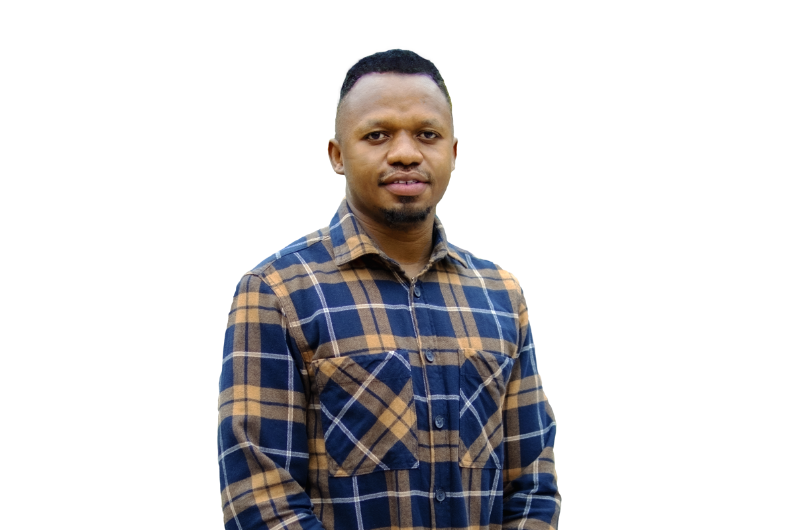

Video editor, motion designer, and storyteller — based in Berlin, working globally.

My Story
Hi, Wale Ben here. Been doing the video editing and motion designing thing for over 8 years now; a journey that started with creative writing and copywriting, backed by a Bachelor's degree in English Language. However, a need to have my ideas perfectly represented visually led me down a journey into video production.
Almost a decade later, I have worked with brands, agencies, and creative teams across Europe, North America, and Africa.
Over time, I've built a practice that spans corporate films, social media campaigns, explainer videos, product demos, and documentary editing. My clients range from property companies and software startups to lifestyle brands and ad agencies.
My thirst for self-development led me to Berlin, one of the most creative cities on the planet, where I earned an MBA in Marketing from the Berlin School of Business and Innovation, ultimately deepening how I think about the business side of creative work; not just what looks good, but what actually drives results for clients.
Based in my favourite city in the world, Berlin, I work with clients locally and remotely. Whether you need a polished corporate film or a fast-turnaround social ad, I bring the same level of craft and intention to every frame.
Start a ProjectTools
Adobe Premiere Pro · After Effects · DaVinci Resolve · Adobe Audition · Photoshop · Illustrator · Cinema 4D
Background
Let's Connect
I'm open to freelance projects, long-term collaborations, and agency partnerships.